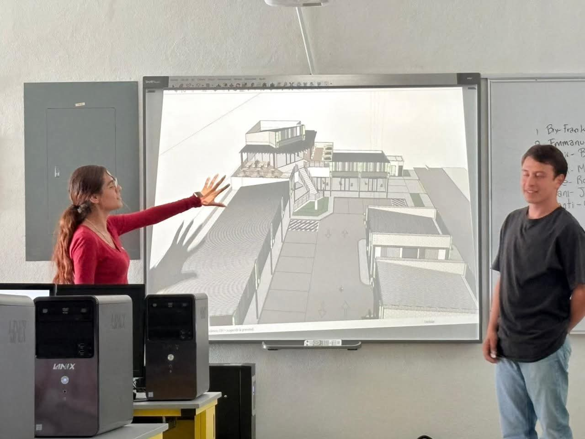
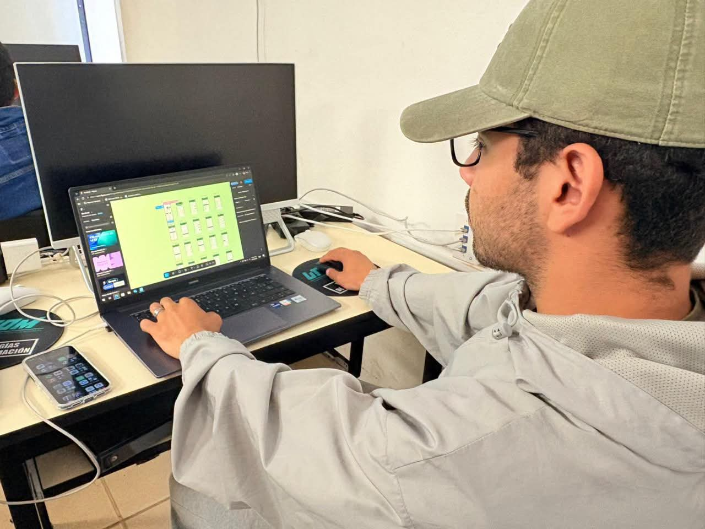
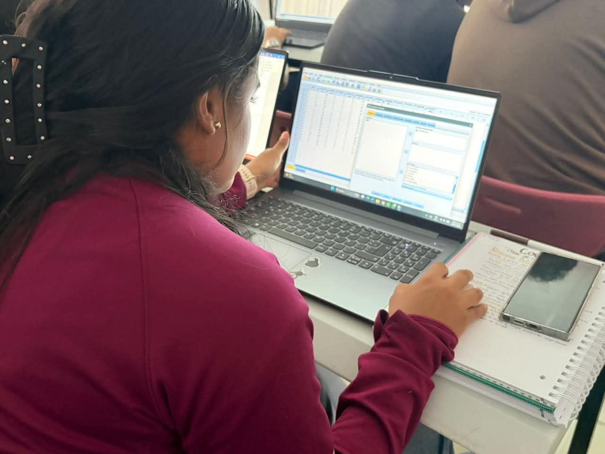
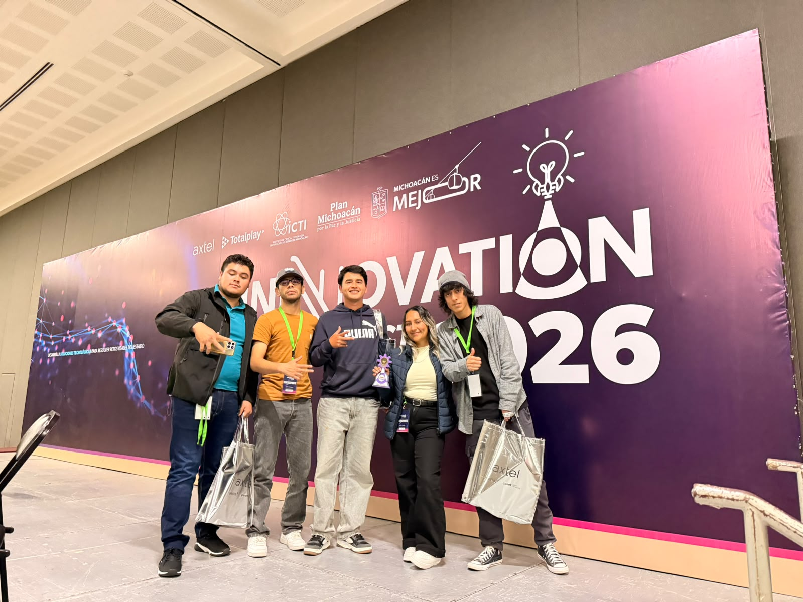

{ }
Desarrolla software
Diseña páginas, aplicaciones y sistemas. Aprende programación estructurada, orientada a objetos, desarrollo web y móvil.
DE LA IDEA AL PRODUCTOUniversidad Tecnológica del Oriente de Michoacán
Convierte tus ideas en tecnología. Explora una carrera donde aprendes a programar, conectar, proteger y crear soluciones digitales que mejoran la vida de las personas.
Conoce tu camino ↘Ingeniería en Tecnologías de la Información e Innovación Digital
Diseña páginas, aplicaciones y sistemas. Aprende programación estructurada, orientada a objetos, desarrollo web y móvil.
DE LA IDEA AL PRODUCTOComprende redes, bases de datos, sistemas operativos, servicios web e Internet de las Cosas.
SISTEMAS QUE SE COMUNICANExplora inteligencia artificial, ciencia de datos, seguridad informática y tecnologías disruptivas.
TECNOLOGÍA CON PROPÓSITOAprendizaje práctico
El mapa curricular combina conocimientos técnicos con comunicación, inglés, trabajo en equipo, ética y gestión de proyectos. Una formación para construir soluciones y colaborar con otras personas.
La carrera en acción
Proyectos, herramientas digitales y participación en la comunidad tecnológica forman parte del camino de la carrera.

Compartir propuestas y explicar cómo pueden convertirse en soluciones.

Explorar herramientas digitales y llevar una idea a la pantalla.

Usar software y recursos tecnológicos para desarrollar nuevas habilidades.

Participar en encuentros y espacios donde las ideas se conectan.
Un camino que crece contigo
La formación avanza por ciclos: primero construyes bases, luego integras conocimientos y finalmente profundizas en tecnologías actuales.
Primer ciclo · Cuatrimestres 1–3
Segundo ciclo · Cuatrimestres 4–6
Tercer ciclo · Cuatrimestres 7–10
Resumen orientativo basado en el mapa curricular compartido: Ingeniería en Tecnologías de la Información e Innovación Digital, vigente a partir de septiembre de 2024. Las materias y su distribución pueden actualizarse; confirma el plan oficial con UTOM.
¿Qué podrás hacer?
Cada proyecto puede ser el inicio de algo más grande.
Diseña experiencias digitales para resolver problemas reales.
Explora sensores, electrónica e Internet de las Cosas.
Transforma información en conocimiento con ciencia de datos e IA.
Conoce prácticas de seguridad, informática forense y privacidad.
También se trata de crecer
En tu formación practicarás cómo comunicar ideas, tomar decisiones, resolver conflictos, liderar proyectos y trabajar con equipos de alto desempeño. Las habilidades humanas hacen mejores ingenieros.
El mundo digital necesita nuevas ideas.
¿Y si la próxima es tuya? ↗